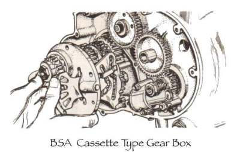
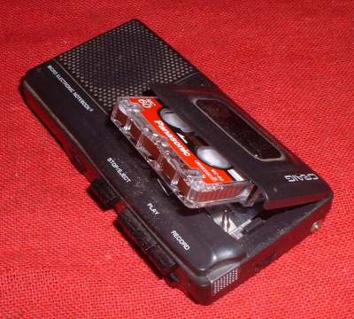
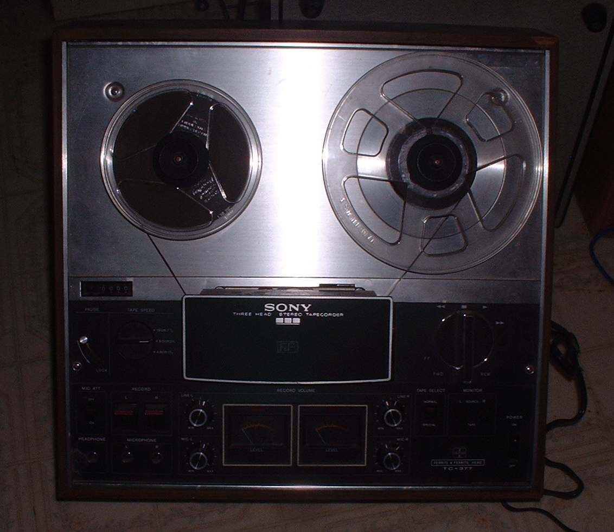
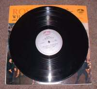
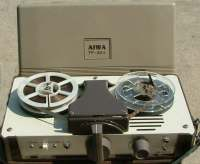
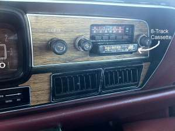
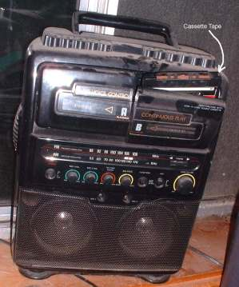

Cassettes
 BSA Cassette Gearbox |
 Mini Cassette |
Back in the Days of Yore we had big, black, twelve inch diameter, CDs. We called them Records. Now-a-day those are just called Vinyl. Vinyl Records were what the real modern, hip people used instead of Reel to Reel tape. But Records were big and had to be played on big Record Players. We wanted to be cool and carry our vibes with us. Trouble was, our vibes had to go on Records or tape. They came out with small, portable, Reel to Reel recorders but you still had to thread and wind the tape on each tape. Not cool.
 Reel to Reel |
 Vinyl Record |
 Portable Reel to Reel |
So in comes Cassettes. First came Eight-Track Cassettes, which worked good in your car. Eight different songs and then it starts over. I liked my Eight track. However, we wanted more so in come regular sized Cassette Music Players. They were in all the cars and everywhere and then came CDs and that was that. Then MP3s did to CDs what CDs did to Cassette tapes.
 Eight-Track Cassette |
 Full Size Cassette Player |
So now you younger folks know what a Cassette is.
 |
 |
Copyright © 1999-2015 dansmc.com. All rights reserved.